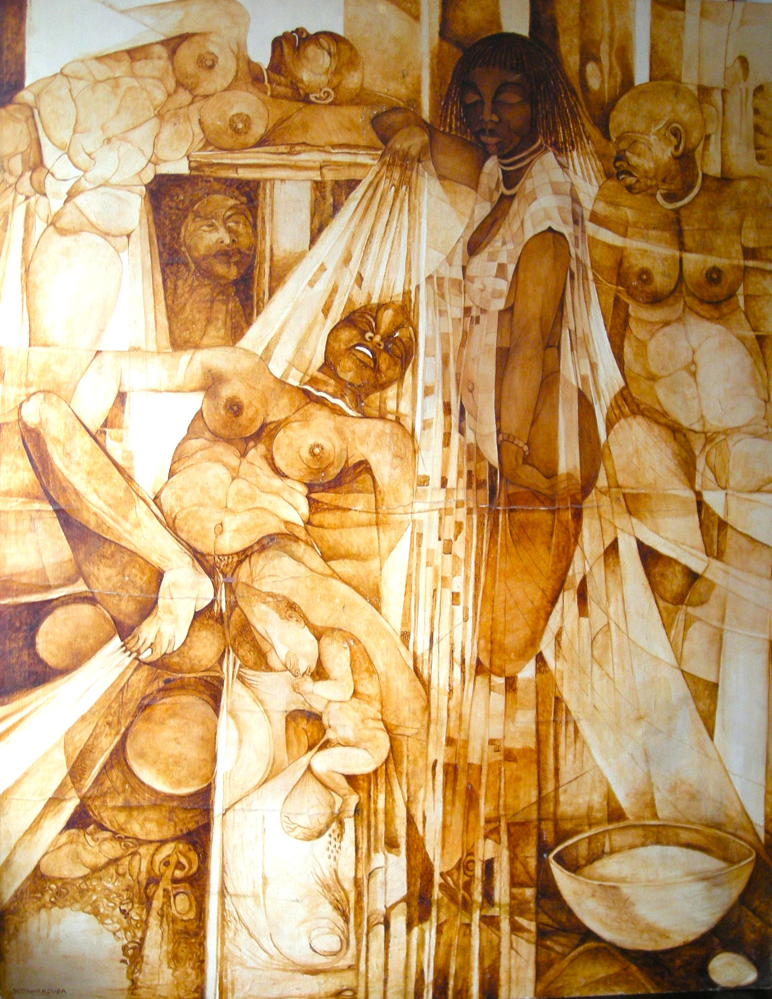

Jacob Yacouba
1947–2014
Artist Biography
Jacob Yacouba, whose birth name was Yakhouba Diallo, was born in Tambacounda, Senegal and moved with his family to the capital Dakar where he studied at the Maurice Delafosse Technical School. Aged just nineteen, in 1966 he won a painting prize at the World Festival of Black Arts held in Senegal. At the time he was concentrating on guitar music but when in 1971 he relocated to Saint-Louis Yacouba he began to devote himself entirely to painting. He had a first solo exhibition at the French Cultural Centre in Saint-Louis in 1973 and then his fame rocketed. Presidents Senghor and Bongo both purchased paintings from him and Yacouba had numerous solo shows in Dakar and elsewhere in Senegal. In addition, his work was shown in France and the United States. Yacouba married a famous actress and gained epithets such as ‘the African Picasso’ and ‘the only grand master of Senegalese painting’. After a period at Rheims School of Art in France Yacouba’s style changed and he became best known for his sensuous depictions of the female form. The last ten years of his life, however, saw him suffering from severe illness and struggling to paint. Yacouba had solo shows at the National Gallery of Art in Dakar in the 1990s and his work is in public collections in Senegal and in France, whilst the Metropolitan Museum of Art in New York holds a print and Atlanta airport in the US hangs a major tapestry. In 2012 noted Senegalese film director Fatou Konde Senghor made a documentary of Yacouba’s life titled The Return of the Elephant.

Untitled